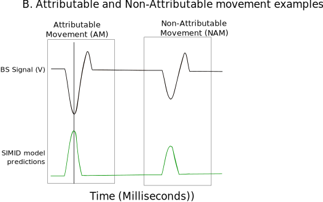

Attributable and Non attributable movements identification¶
Attributable movements (AMs) are movements that result in clear and instantaneous outcomes. Other types of movements cannot be simply attributed to any clear outcome or goal; we refer to them as non-attributable movements (NAMs). This section is on the identification of NAMs and AMS. Furthermore, to understand these movements different parameters are extracted and these are explained in this section as well.
NAMs and AMs had to be extracted from the continuous bendsensor to tap model predictions. The first step towards this was to threshold the model predictions with the maximum F2 score to exclude noise (See the evaluation section in bendsensor to tap model).
Attributable movements definition
AMs were identified, any predicted peak around +/- 100 ms of the smartphone interaction (SI) was considered a prediction of the interaction. 100 ms was chosen because this is the peak width of the model predictions averaged across all participants. Therefore, any prediction of +/- 100 ms around a SI identified an AM.
Non Attributable movements definition
NAMs were identified with a model prediction where there was no SI in the vicinity. This was defined as any peak of a model prediction further than +/- 1000 ms from the interaction. 1000 ms was chosen because the movement to generate an interaction usually occurred within that duration.
We distinguished between AMs and NAMs based on the model predictions of the deltas and those based on the model predictions of the integrals.
Note
Everything is saved in the EEGLAB data format. The data is timelocked around the event and epoched this is then used to identify the neural correlates of these events. For this reason some functions in this section require functions from EEG analysis section. Specifically the EEG preprocessing functions.
AMs and NAMs parameters¶
We also calculate a few parameters for each event. The events are either an AM, NAM as identified from the bendsensor to tap model predictions. These predictions are basically continuous values with peaks being the predicted events.
Maximum peak value: pks
Distance to the nearest smartphone interaction (tap) after the event: distance_tap_after_event
Distance to the nearest smartphone interaction (tap) before the event: distance_tap_before_event
The model prediction value at the location of the tap after the event: pks_after_tap
The model prediction value at the location of the tap before the event: pks_before_tap
Distance to the nearest model predicted peak (larger the set threshold of the optimal f2 score) after event: distance_pred_after_event
Distance to the nearest model predicted peak (larger the set threshold of the optimal f2 score) before the event: distance_pred_before_event
Maximum peak value after event: pks_pred_after
Maximum peak value before event: pks_pred_before
The type of event the nearest model prediction (either AM, NAM or None) types_after_event
The type of event the nearest model prediction (either AM, NAM or None) types_before_event
Boolean 1 indicating the type of the event NAMs_i, NAMs_d, AMs_i, AMs_d, pt
Note
The smartphone interaction (SI) can also be used as an event in that case it is called pt. The only difference is the eventlatency is at the location of the tap and not the model predicted peak.
Directory structure¶
+-- ams_nams
| +-- features --> Scripts to find events (ams, nams, smartphone interactions(pt)) and epoch eeg data around them
| | +-- add_events.m --> adds events to the eeglab struct
| | +-- calculate_date_differences.m --> used to identify second curfew files
| | +-- find_ams_n_nams.m --> finds ams and nams in the model predictions
| | +-- find_nearest_distances.m --> finds nearest (1 before and 1 after) events for all participants
| | +-- find_nearest.m --> finds nearest (1 before and 1 after) events for one participant
| | +-- set_parameters.m --> calculates other parameters of the event
| | +-- pred_events.m --> this calls all other functions and epochs the eeg data around the events
| +-- result_plotting
| | +-- analyze_bs_to_tap_mod_results.py --> analyze model predictions and generated f2 scores plot
| | +-- erp_plots.m --> plots ERP results
| | +-- erp_with_CI.m --> plots ERP with confidence intervals
| | +-- generate_all_epochs.m --> prepares data for generation of figure D and E
| | +-- generate_bs_to_tap_model_preds.m --> prepares data for generation of figure B and C
| | +-- get_ams_nam.m --> get the ams and nams for all participant in right format for plotting
| | +-- plot_bs_shape_tl_ams_nams --> plot average bendsensor timelocked to ams and nams for integrals and deltas (Figure 1 B)
| | +-- plot_density_am_nams.m --> plot nearest events for integrals and deltas (Figure 1 D)
| | +-- plot_freq_ams_nams.m --> plot frequencies of ams and nams for integrals and deltas (Figure 1 C)
| | +-- plot_inter_event_intervals.m --> plot inter event intervals for integrals and deltas (Figure 1 E)
| | +-- plot_pred_tl_ams_nams.m --> plot model predictions timelocked around ams and nams for integrals and deltas (Supplementary)
Code¶
Features¶
- ams_nams.features.add_events(EEG, data, num, type)¶
Adds identified events to EEG.event and EEG.urevent In this case the events are predicted peak locations or tap locations
Usage: [EEG] = add_events(EEG,data,num,type)
- Input(s):
EEG = EEG struct
data = the event indices
num = number of events
type = char array (‘ ‘) denoting event type (phone taps are denoted as pt and predictions as pred_d for deltas and pred_i for integrals)
- Output(s):
EEG = EEG struct with added EEG events
Author: R.M.D. Kock
- ams_nams.features.calculate_date_differences(eeg_name)¶
Calculates the difference between all dates and smallest date This function is used to ignore the second file of curfew participants(ignore the data after curfew)
Usage: [eeg_name] = calculate_date_differences(eeg_name)
- Input(s):
eeg_name = loaded status.mat for one participant
- Output(s):
eeg_name = status.mat with new field datediff
Author: R.M.D. Kock
- ams_nams.features.find_ams_n_nams(taps, params, precision_am, vicinity)¶
Find the position of ams and nams
Usage: [s] = find_ams_n_nams(taps, params, precision_am, vicinity)
- Input(s):
taps = position of real taps
params = cell with the results of findpeaks, peak local maxima and location
precision_am = int which denotes the distance a tap can be from the position of a predicted tap to define an AM– AMs are any prediction where predicted local maxima is within 100 ms of real tap
vicinity = int which denotes the distance a tap can be from the position of a predicted tap to define a NAM– NAMs are any prediction further than 1000 ms from a real tap
- Output(s):
s = struct with position of AMs and NAMs
Author: R.M.D. Kock
- ams_nams.features.find_nearest(x, find_value)¶
Find nearest predicted peak before and after one tap or prediction
Usage: [found_max, found_max] = find_nearest(x,find_value)
- Input(s):
x = array with positions of events
find_value = the position of current tap or prediction
- Output(s):
found_max = Local maxima of the nearest prediction after event
found_max = Local minima of the nearest prediction before event
Author: R.M.D. Kock
- ams_nams.features.find_nearest_distances(all_2_find, latencies, taps)¶
Find nearest predicted peak before and after all taps or predictions
Usage: [distance_maxs, distance_mins, maxs, mins, types] = find_nearest_distances(taps,latencies)
- Input(s):
all_2_find = position of events (either taps or predictions)
latencies = latencies of all the predicted events
taps = position of taps
- Output(s):
distance_maxs = Position (index) of the nearest predicted peaks after event
distance_mins = Position (index) of the nearest predicted peaks before event
maxs = Local maxima of the nearest predicted peaks after event
mins = Local minima of the nearest predicted peaks before event
- types = cell array types of nearest events
types{1,i} = type of nearest event before current event;
types{2,i} = type of nearest event after current event;
- Requires:
find_nearest
Author: R.M.D. Kock
- ams_nams.features.pred_events(EEG, event_name_d, event_name_i, epoch_window)¶
Get EEG in right format; epoched with all GLM parameters
Usage: [EEG_integrals, EEG_deltas,indices_integrals] = pred_events(EEG, event_name_d, event_name_i)
- Input(s):
EEG = EEG struct
event_name_d: name of events derived from delta features to calculate the parameters from (as set by add_events() all options are AMs_d, NAMs_d and pt)
event_name_i: name of events derived from delta features to calculate the parameters from (as set by add_events() all options are AMs_i, NAMs_i and pt)
- Output(s):
EEG_integrals = processed EEG struct with parameters from integral predictions
EEG_deltas = processed EEG struct with parameters from delta predictions
indices_integrals = The indices of all integral events
- Requires:
find_ams_n_nams.m
add_events.m
set_parameters.m
Author: R.M.D. Kock
- ams_nams.features.set_parameters(EEG, feature, params, all_eventtypes)¶
Extract the features used for GLM Usage: [EEG] = set_parameters(EEG, feature, params, all_eventtypes)
- Input(s):
EEG = EEG struct
feature = cell with the feature name (either delta and integral)
params = struct with results from findpeaks, peak local maxima,
width, promincence and location - all_eventtypes = name of events to calculate the parameters from (as set by add_events() all options are AMs (AMs_d AMs_i) and NAMs (NAMs_d NAMs_i) from both integral and delta feature and phone touches (pt)
- Output(s):
EEG = EEG struct with parameters in EEG.epoch
- Requires:
find_nearest_distances.m
Author: R.M.D. Kock
Result plotting¶
- ams_nams.result_plotting_figure_1.generate_all_epochs(EEG1_i, EEG1_d, participant, indx, all_data, ~)¶
Creates a placeholder cell with the datasets of all participants for plotting of results
Usage: [all_data] = generate_bs_to_tap_model_preds(EEG1_i, EEG1_d,participant, indx, all_data)
- Input(s):
EEG1_i = EEG struct with epoched integral data
EEG1_d = EEG struct with epoched deltas data
participant = participant
indx = index to place the participant data in cell
all_data = cell with the epoched EEG data of other participants
- Output(s):
- all_data = cell placeholder cell with the epoched predictions of one participant
all_data{indx,1} = participant
all_data{indx,2} = epoched data for integrals
all_data{indx,3} = epoched data for deltas
Author: R.M.D. Kock
- ams_nams.result_plotting_figure_1.generate_bs_to_tap_model_preds(path, save_results, save_path)¶
Creates a placeholder cell with the datasets of all participants for plotting of results
- Usage:
[bs_to_tap_predictions] = generate_bs_to_tap_model_preds(path,save_results, save_path)
[bs_to_tap_predictions] = generate_bs_to_tap_model_preds(path)
[bs_to_tap_predictions] = generate_bs_to_tap_model_preds(path, save_results)
- Input(s):
path = path to data with bs_to_tap model predictions
save_results = bool optional – 0 not to save placeholder and 1 to save (default 1)
save_path = char optional – path to save the cell (default path)
- Output(s):
- bs_to_tap_predictions = cell placeholder cell with the bs_to_tap data of all participants
bs_to_tap_predictions{index,1} = participant;
bs_to_tap_predictions{index,2} = bendsensor data;
bs_to_tap_predictions{index,3} = delta predictions;
bs_to_tap_predictions{index,4} = integral predictions;
bs_to_tap_predictions{index,5} = smartphone interactions;
bs_to_tap_predictions{index,6} = optimal threshold integrals;
bs_to_tap_predictions{index,7} = optimal threshold deltas;
Author: R.M.D. Kock
- ams_nams.result_plotting_figure_1.generate_figure1a¶
Exploratory for i=1:20
figure; plot(EEG.Aligned.BS_to_tap.BS([s_i.NAMs(i)-1000:s_i.NAMs(i)+1000])); hold on xline(2000/2); plot(EEG.Aligned.BS_to_tap.integrals([s_i.NAMs(i)-1000:s_i.NAMs(i)+1000])); title(sprintf(‘%d’, i))
end
- ams_nams.result_plotting_figure_1.get_ams_nam(bs_to_tap_predictions)¶
Get ams, nams and tap locations for all participants
Usage: [s_i,s_d,taps] = get_ams_nam(bs_to_tap_predictions)
- Input(s):
bs_to_tap_predictions = cell placeholder cell with the bs_to_tap data of all participants
- Output(s):
s_i = struct with ams, nams idexes for integrals
s_d = struct with ams, nams idexes for deltas
taps = location of smartphone taps
- Requires:
find_ams_n_nams.m
Author: R.M.D. Kock
- ams_nams.result_plotting_figure_1.plot_bs_shape_tl_ams_nams(bs_to_tap_predictions, save_results, save_path, data, plotting_options)¶
Plot average bs signal around AMs and NAMs
- Usage:
plot_bs_shape_tl_ams_nams(bs_to_tap_predictions)
plot_bs_shape_tl_ams_nams(… , save_results)
plot_bs_shape_tl_ams_nams(… , save_results, save_path)
plot_bs_shape_tl_ams_nams(… , ‘s_i’, s_i, ‘s_d’,s_d, ‘taps’, taps)
plot_bs_shape_tl_ams_nams(… , ‘plot_integrals’, logical, ‘plot_deltas’, logical, ‘plot_si’,logical)
- Input(s):
bs_to_tap_predictions = cell placeholder cell with the bs_to_tap data of all participants
save_results = bool optional – 0 not to save placeholder and 1 to save (default 1)
save_path = char optional – path to save figure as pdf (default path)
data.s_i = cell array optional – with struct containing ams, nams idices for integrals
data.s_d = cell array optional – with struct containing ams, nams idices for deltas
data.taps = cell array optional – with struct containing tap idices
plotting_options.plot_integrals = logical optional – to plot the bs around integral ams and nams
plotting_options.plot_deltas = logical optional – to plot the bs around deltas ams and nams
plotting_options.plot_si = logical optional –to plot the bs around taps
Author: R.M.D. Kock
- ams_nams.result_plotting_figure_1.plot_density_am_nams(all_epochs, save_results, save_path, options)¶
Figure D: temporal distance probability plot one participant
- Usage:
plot_density_am_nams(all_epochs)
plot_density_am_nams(… , save_results)
plot_density_am_nams(… , save_results, save_path)
- Input(s):
all_epochs = cell placeholder cell with the epoched data with all the parameters set of all participants
save_results = bool optional – 0 not to save placeholder and 1 to save (default 1)
save_path = char optional – path to save figure as pdf (default path)
Author: R.M.D. Kock
- ams_nams.result_plotting_figure_1.plot_freq_ams_nams(bs_to_tap_predictions, save_results, save_path, data, plotting_options)¶
Plot average bs signal around AMs and NAMs
- Usage:
plot_freq_ams_nams(bs_to_tap_predictions, save_results, save_path)
plot_freq_ams_nams(… , save_results)
plot_freq_ams_nams(… , save_results, save_path)
plot_freq_ams_nams(… , ‘s_i’, s_i, ‘s_d’,s_d, ‘taps’, taps)
plot_freq_ams_nams(… , ‘plot_integrals’, logical, ‘plot_deltas’, logical)
- Input(s):
bs_to_tap_predictions = cell placeholder cell with the bs_to_tap data of all participants
save_results = bool optional – 0 not to save placeholder and 1 to save (default 1)
save_path = char optional – path to save figure as pdf (default path)
data.s_i = cell array optional – with struct containing ams, nams idices for integrals
data.s_d = cell array optional – with struct containing ams, nams idices for deltas
data.taps = cell array optional – with struct containing tap idices
plotting_options.plot_integrals = logical optional – to plot the frequencies of integral ams and nams
plotting_options.plot_deltas = logical optional – to plot the frequencies of deltas ams and nams
Author: R.M.D. Kock
- ams_nams.result_plotting_figure_1.plot_inter_event_interval(all_epochs, bs_to_tap_predictions, save_results, save_path, data)¶
Figure D: temporal distance probability plot one participant
- Usage: plot_inter_event_interval(all_epochs)
plot_inter_event_interval(… , save_results) plot_inter_event_interval(… , save_results, save_path)
- Input(s):
all_epochs = cell placeholder cell with the epoched data with all the parameters set of all participants
save_results = bool optional – 0 not to save placeholder and 1 to save (default 1)
save_path = char optional – path to save figure as pdf (default path)
Author: R.M.D. Kock
- ams_nams.result_plotting_figure_1.plot_pred_tl_ams_nams(bs_to_tap_predictions, save_results, save_path, data, plotting_options)¶
Plot average predicted valuesaround nam,am and distriubution of these values
- Usage:
plot_pred_tl_ams_nams(bs_to_tap_predictions)
plot_pred_tl_ams_nams(… , save_results)
plot_pred_tl_ams_nams(… , save_results, save_path)
plot_pred_tl_ams_nams(… , ‘s_i’, s_i, ‘s_d’,s_d, ‘taps’, taps)
plot_pred_tl_ams_nams(… , ‘plot_integrals’, logical, ‘plot_deltas’, logical, ‘plot_si’,logical)
- Input(s):
bs_to_tap_predictions = cell placeholder cell with the bs_to_tap data of all participants
save_results = bool optional – 0 not to save placeholder and 1 to save (default 1)
save_path = char optional – path to save figure as pdf (default path)
data.s_i = cell array optional – with struct containing ams, nams idices for integrals
data.s_d = cell array optional – with struct containing ams, nams idices for deltas
data.taps = cell array optional – with struct containing tap idices
plotting_options.plot_integrals = logical optional – to plot the model predicitons around integral ams and nams
plotting_options.plot_deltas = logical optional – to plot the model predicitons around deltas ams and nams
plotting_options.plot_si = logical optional –to plot the model predicitons around taps
Author: R.M.D. Kock
- ams_nams.result_plotting_figure_1.save_descriptives_csv¶
writecell(c, ‘~/non_attribute_movement_and_EEG/data/figure_1.csv’)